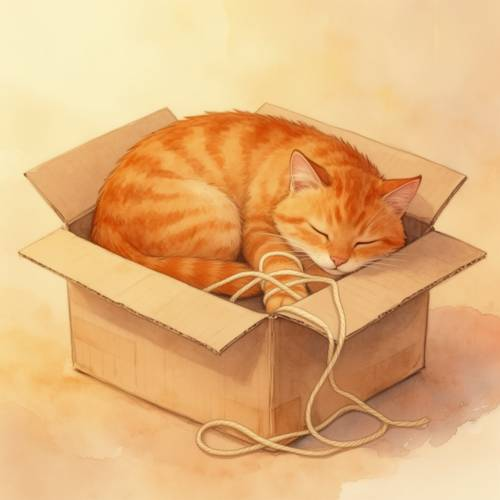
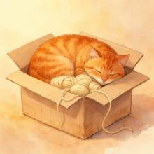
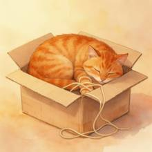

Logical Reasoning — In the warm healing illustration style, an orange cat is curled up in
In the warm healing illustration style, an orange cat is curled up in a carton with wool wrapped around its feet, but there are no wool balls next to it.


Judge — Direct
- FAILLogical Reasoning — The prompt requires wool to be wrapped around the cat's feet. In the image, a bundle of wool is placed next to the cat's paws inside the box, but it is not wrapped around them. Therefore, the specific action described is not depicted.
- FAILGrammar - Negation — The prompt states that there should be "no wool balls". The image, however, clearly shows a large bundle of off-white wool or yarn placed inside the carton with the cat.
- PASSStyle — The image is rendered in a soft, painterly style. It uses a warm color palette with golden light creating a peaceful and cozy atmosphere, which is consistent with the "warm healing illustration style".
- PASSRelationship - Inclusion — The image shows an orange cat curled up and sleeping. The cat is located entirely within the confines of a cardboard box, which is a type of carton.
Judge — Continuum
- PASSLogical Reasoning — The image shows an orange cat with a white string, representing wool, wrapped around its front paws. There are no balls of wool depicted in the scene. This combination of the presence of wrapped wool and the absence of a wool ball meets the logical requirement.
- PASSGrammar - Negation — The image does not contain any wool balls, correctly adhering to the negative constraint specified in the prompt.
- PASSStyle — The image is created in an illustrative style using a warm color palette of oranges, yellows, and browns. The depiction of the sleeping cat creates a calm and gentle atmosphere, consistent with a 'warm healing' style.
- PASSRelationship - Inclusion — The image shows an orange cat positioned inside a cardboard box, which is a type of carton, thus satisfying the inclusion relationship.
What the agent did
Thinking
A request for a warm healing illustration: an orange cat curled up in a cardboard box, with wool/yarn wrapped around its feet (paws), and importantly NO wool balls next to it. Let me generate.
Model
I'll generate this warm healing-style illustration.
Step 1 — `generate_image`
{
"model": "flux2-dev",
"prompt": "Warm healing style illustration, soft gouache-like painting, an orange tabby cat peacefully curled up asleep inside a small cardboard carton box, strands of soft cream-colored wool yarn loosely wrapped around its paws and feet, cozy warm color palette of amber, honey and soft beige, gentle diffused warm light, dreamy soft edges, hand-drawn storybook feel, calm and comforting atmosphere, no yarn balls anywhere in the scene"
}Result img_0

Thinking
The image shows a cluster of yarn balls in front of the cat — that violates "no wool balls next to it". Also the wool should be wrapped around its feet/paws, not balls in front. Let me edit: replace the yarn balls with loose strands of cream wool yarn wrapped around the cat's paws.
Step 2 — `edit_image`
{
"image": "img_0",
"model": "flux2-dev",
"prompt": "Replace the cluster of round yarn balls at the front of the box with a few loose tangled strands of cream-colored wool yarn gently wrapped around the cat's front paws, no ball shapes anywhere"
}Result img_1

Thinking
The yarn balls are gone; now loose strands of cream yarn wrap around the front paws. One paw dangles over the edge with yarn wrapped around it — matches "wool wrapped around its feet". No yarn balls. This matches the prompt well. Mark best and stop.
Step 3 — `mark_best`
{
"image": "img_1",
"reason": "All prompt elements present: warm healing gouache style, orange cat curled up in a carton, wool yarn wrapped around its paws, and no wool balls anywhere."
}Model
The illustration is complete! 🐱 The final image matches your description perfectly: - **Warm healing style** — soft gouache/watercolor painting with a gentle amber, honey, and beige palette and soft edges - **Orange cat curled up in a carton** — a sleepy orange tabby peacefully dozing inside a cardboard box - **Wool wrapped around its feet** — loose strands of cream-colored yarn gently tangled around the cat's paws, with one paw resting over the box edge - **No wool balls** — I removed the yarn ball cluster that appeared in the first version, so only loose wool strands remain A cozy, comforting little scene just as you asked for!